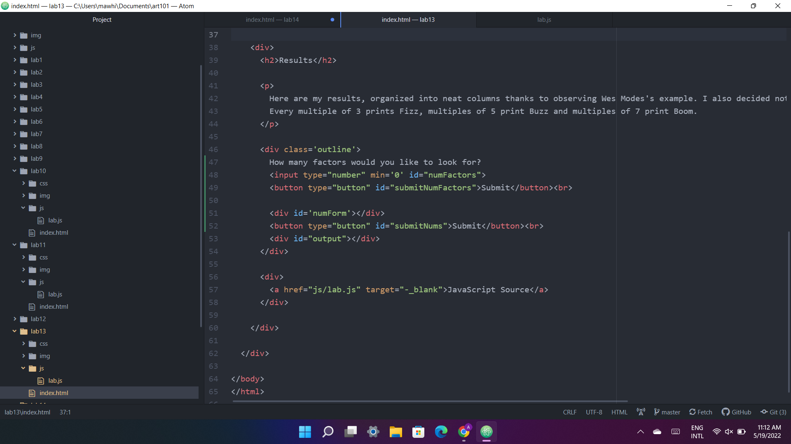
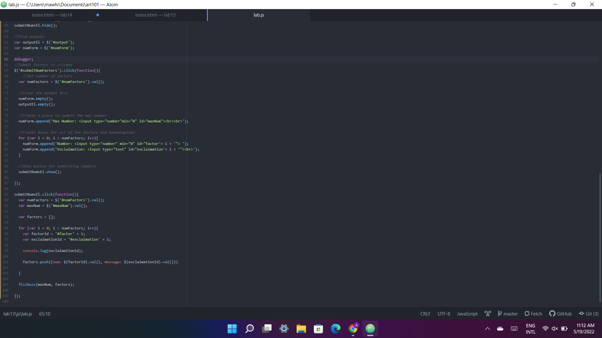

Evan and I didn't have any code that wasn't working the way we intended to, but we continued to experiment with the debugging tools and strategies we covered in lecture.
We didn't run into any syntax or logical problems, so we decided to refactor and add some features to our previous lab. I added forms for users to enter any number of factors to look for and Evan refactored his code to use an array of objects.
You can see my remastered Lab 13 here.
This is where I added new form boxes to accept numbers. I learned about number specific form boxes and how to set a minimun number to it.
Here is my javascript. I added two additinoal events and used for loops to generate more form boxes and retrieve their inputs.
